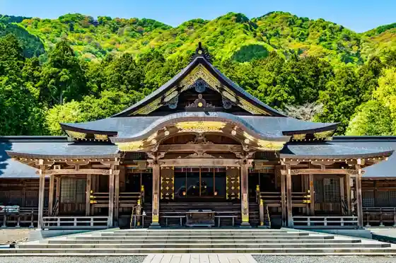
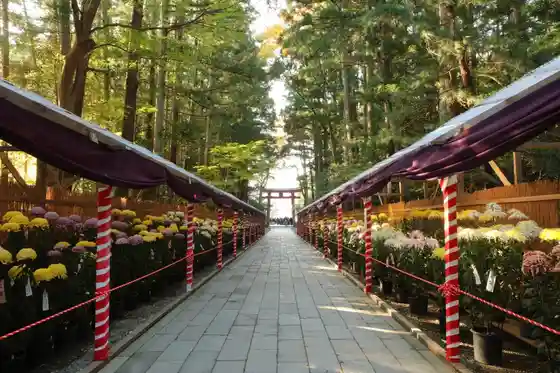
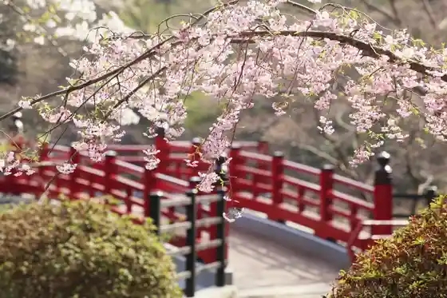

Echigo Ichinomiya Yahiko Shrine
Yahiko, Niigata · 0256-94-2001 · Official / source link

Yahiko Kiku Festival
Yahiko, Niigata · 0256-94-3154 · Official / source link

Yahiko Park
Yahiko, Niigata · 0256-94-3154 · Official / source link

Yahiko Yama
Yahiko, Niigata · 0256-94-3154 · Official / source link
Yahiko Park Momiji Tani Raitoappu
Yahiko, Niigata · 0256-94-3154 · Official / source link
Yahiko Yama Sukai Line
Yahiko, Niigata · 0256-94-3154 · Official / source link
Yahiko Sakurai Sato Onsen Sakura Baths
Yahiko, Niigata · 0256-94-1126 · Official / source link
Yahiko Yama Ropuei
Yahiko, Niigata · 0256-94-4141 · Official / source link
Bunsui Do Kashi Ho Panda Yaki
Yahiko, Niigata · 0256-94-2282 · Official / source link
Yahiko Yama Yahiko Jinja Tozanguchi
Yahiko, Niigata · 0256-94-3154 · Official / source link
Yahiko Yu Jinja Onsen (Yahiko Onsen Sato)
Yahiko, Niigata · 0256-94-3154 · Official / source link
Yahiko Sancho Park
Yahiko, Niigata · Official / source link
Yahiko Yamabiraki
Yahiko, Niigata · 0256-94-3154 · Official / source link
Otorii
Yahiko, Niigata · 0256-94-3154 · Official / source link
Echigo Ichinomiya Yahiko Shrine (O Nichi Tomo Matsuri (Onikkusai))
Yahiko, Niigata · 0256-94-3154 · Official / source link
Yahiko Jinja Ugan Byo
Yahiko, Niigata · 0256-94-3154 · Official / source link
Yahiko Shuzo (Kabu) / Yahiko (Kyoku)
Yahiko, Niigata · 0256-94-3100 · Official / source link
Yahiko Jinja Keidai Massha Ju Hashira Jinja Shaden
Yahiko, Niigata · 0256-94-2001 · Official / source link
Yahiko YY Park
Yahiko, Niigata · 0256-78-8288 · Official / source link
Yahiko Yama Tembo Biru
Yahiko, Niigata · 0256-94-4141 · Official / source link
Manyo no Michi
Yahiko, Niigata · 0256-94-3154 · Official / source link
Kyu Takeishi Ie House
Yahiko, Niigata · 0256-94-4311 · Official / source link
Gyokuto
Yahiko, Niigata · 0256-94-3154 · Official / source link
Yahiko no Takogayaki
Yahiko, Niigata · 0256-94-3154 · Official / source link
Yahiko no Dai Icho
Yahiko, Niigata · 0256-94-3154 · Official / source link
Yahiko Jinja Takaramono Dono
Yahiko, Niigata · 0256-94-2001 · Official / source link
Basho Kuhi
Yahiko, Niigata · 0256-94-3154 · Official / source link
Yahiko no Ba Ba Sugi
Yahiko, Niigata · 0256-94-3154 · Official / source link
Yu Shrine (Ishiyakushi Sama)
Yahiko, Niigata · 0256-94-3154 · Official / source link
Kurotaki Joshi
Yahiko, Niigata · 0256-94-4311 · Official / source link
Yahiko Jinja Shaso
Yahiko, Niigata · 0256-94-3154 · Official / source link
Yahiko Yama Yakei & Hoshizora Kuruzu
Yahiko, Niigata · 0256-94-4141 · Official / source link
Sakaya Yayoi Teisuteingurumu
Yahiko, Niigata · 0256-94-5841 · Official / source link
Yahiko Kanko Boranteia Gaido
Yahiko, Niigata · 0256-94-3154 · Official / source link
Yahiko Jinja Sakura En
Yahiko, Niigata · 0256-94-3154 · Official / source link
Yahiko Yama Hachimai Sawanobori Yamaguchi Chubu Hokuriku Shizen Hodo
Yahiko, Niigata · 0256-94-3154 · Official / source link
Kikyo Joshi
Yahiko, Niigata · 0256-94-4311 · Official / source link
Yahiko Sancho Museum
Yahiko, Niigata · 0256-94-4141 · Official / source link
Yahagi no Nihonmatsu
Yahiko, Niigata · 0256-94-4311 · Official / source link
Jidounten Basu (Miko Pyon Go) Maruwakari Tokubetsu Taiken Kai
Yahiko, Niigata · 0256-94-3138 · Official / source link
Yahiko Onsen Hotaru Kansho
Yahiko, Niigata · 0256-94-3154 · Official / source link